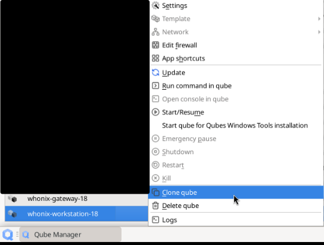
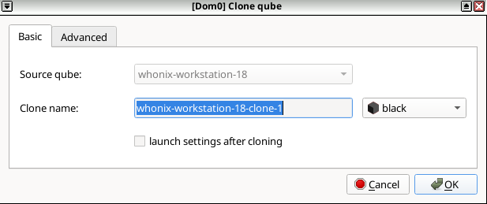

We believe security software like Whonix needs to remain Open Source and independent. Would you help sustain and grow the project? Learn more about our 14 year success story and maybe DONATE!
Qubes/UpdatesProxyDocumentationContributorsPrevious page: Qubes/UpdatesProxyIndex page: DocumentationNext page: ContributorsMultiple Qubes-Whonix Templates
Compartmentalization. Managing multiple Qubes-Whonix Templates.
Introduction
Multiple Qubes-Whonix Templates provides much greater flexibility over a single template when choosing software packages. The additional cloned templates can be customized with software to meet specific requirements; something impossible to achieve with a single Template. [1]
Rationale
- Packages from a later release: Installing packages from a
later release could end up breaking the system. For example, mixing
packages from Debian
Stable with those of a later release like Debian Testing can lead
to an unstable system because of associated software dependencies
required for full functionality. [2] [3]
Prior to installing Debian packages from a later release, first read
 Install from Debian Testing.
Install from Debian Testing. - Custom software: Additional cloned templates makes it easy to
install custom software used for a specific application. For example,
users could Tunnel UDP
over Tor by configuring
whonix-workstation-18to route all applications through a VPN tunnel. However, this method also increases the risk of identity correlation. To mitigate this risk, the App Qube based on this template should only be used for the particular application that must be routed through the tunnel-link. Before installing custom software it is recommended to first read Install Software: General Advice. - Untrusted packages: It is unwise to install untrusted packages in a template used for sensitive activities. With multiple cloned Templates, a single template can be designated as a less trusted domain for that purpose. [4] Read Trusting your templates prior to installing untrusted packages.
Cloning Templates
 Note: Each Template's root filesystem runs
independently from all other Templates. [5] Therefore,
each individual Template must be updated separately. This is a Qubes
default and unspecific to
Qubes-Whonix.
Note: Each Template's root filesystem runs
independently from all other Templates. [5] Therefore,
each individual Template must be updated separately. This is a Qubes
default and unspecific to
Qubes-Whonix.
Qube Manager
Cloning templates in Qubes-Whonix is easily accomplished via Qube Manager.
1 Naming convention advice:
Be careful with naming conventions for both Templates and App Qubes (based on those templates) so they are not confused with each other. This will minimize the chance of basing an App Qube on the wrong template.
When creating App Qubes based on cloned Templates, a purpose-based
naming convention is sensible so there is no ambiguity regarding the
intended function of an App Qube. For example, if an App Qube is created
to tunnel UDP over Tor, appending tunnel-udp (the purpose)
to the end of anon-whonix would lead to the name
anon-whonix-tunnel-udp.
2 Template cloning:
To clone Qubes-Whonix Templates, follow the steps below in Qube Manager:
Qube Manager → VM to be Cloned →
Clone qube → Enter name for Qube clone
Figure: Cloning Whonix qubes

When prompted, give the newly cloned VM a name that is not easily confused with other VMs. This minimizes the chances of basing an App Qube on the wrong template; there could be serious security concerns if a "trusted" App Qube was based on the wrong Template with untrusted packages.
Figure: Clone Renaming

3 Done.
Cloning has been completed.
4 UpdatesProxy settings:
The user might wish to customize the UpdatesProxy Settings.
UpdatesProxy Settings
 Reminder: The
Reminder: The net qube setting of Templates should
be set to None. [6]
 A cloned Whonix Template will by default be upgraded through
A cloned Whonix Template will by default be upgraded through
sys-whonix. This is a known Qubes usability issue.
[7]
If you would like to change the UpdatesProxy setting for any Template, apply the following steps.
1 Disable the old-style file:
In dom0, move the Qubes old-style configuration file
/etc/qubes-rpc/policy/qubes.UpdatesProxy out of the way.
[8]
If there is an error that this file no longer exists, that is OK too.
The only purpose of this step is to make sure
/etc/qubes-rpc/policy/qubes.UpdatesProxy no longer
exists.
sudo mv /etc/qubes-rpc/policy/qubes.UpdatesProxy ~/
2 Open the new-style policy file:
In dom0, open
/etc/qubes/policy.d/30-user.policy with root rights.
sudo nano /etc/qubes/policy.d/30-user.policy
3 Learn the syntax:
Syntax: [9]
qubes.UpdatesProxy * name-of-template-vm @default allow target=name-of-net-qube4 See an example rule:
Example line entry example:
qubes.UpdatesProxy * whonix-workstation-18-clone-1 @default allow target=sys-whonix-cloned
Full example:
If the user already completed adding the above line entry, the following is not required. It is only for illustrative purposes. A complete file could look like this.
qubes.UpdatesProxy * whonix-gateway-18-clone-1 @default allow target=sys-whonix-cloned qubes.UpdatesProxy * whonix-workstation-18-clone-1 @default allow target=sys-whonix-cloned
5 Add your new entry:
Based on the syntax and examples above.
Note: Replace sys-whonix-cloned with the actual name of
the VM such as for example sys-whonix2.
6 Save the file:
<Ctrl-X> --> press Y --> <Enter>7 Done.
The procedure is now complete.
See Also
Footnotes
- Optionally, the default template can be cloned and used as the default template for App Qubes. Having a "known-good" backup template available at all times is best practice.
- Using packages from different repositories can lead to
Dependency Hell.
- This problem can be avoided by cloning additional Whonix templates and preferring packages from a single repository in each Template.
- It is strongly encouraged to only install signed packages from a trusted source.
- This applies to all Templates, even if they were cloned.
- Since Templates in Qubes R4 and above are supposed to be upgraded through qrexec based Qubes updates proxy. * Qubes documentation: How to install software - Technical details * Qubes issues: implement qrexec based updates proxy
- * Qubes issue: add UpdateVM setting to qubes-vm-settings * Whonix forum discussion: cloned Whonix templateVM upgrades through sys-whonix even if net qube is set to a different gateway
- Qubes dom0 configuration folder
/etc/qubes-rpc/policyis legacy. It was replaced with the new-style qrexec config folder/etc/qubes/policy.d/which is used here in the documentation. This is unspecific to Whonix. - This works because as per Qubes default, Qubes parses configuration
file
/etc/qubes/policy.d/30-user.policybefore/etc/qubes/policy.d/90-default.policy. See also Qubes dom0 file/etc/qubes/policy.d/90-default.policy. cat /etc/qubes/policy.d/90-default.policy/etc/qubes/policy.d/90-default.policycomes with the following comment on top.## Do not modify this file, create a new policy file with a lower number in the ## filename instead. For example `30-user.policy`.
Categories: Documentation